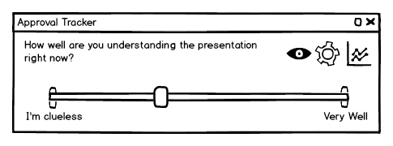
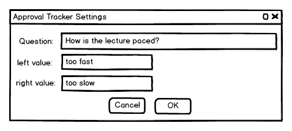
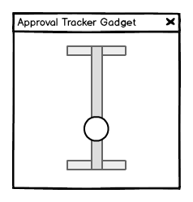

There are three Approval Tracker windows, two of which show the current average approval of the presentation.
One window is the Approval Tracker Analysis window. Another is the Approval Tracker Gadget, and the last is the Approval Tracker Control.The approval tracker control and gadget display the current average display.
The approval tracker control displays the current average on a slider much like what the students see, except the presenter's slider represents the class average whereas the students' sliders represent their individual approvals. The approval tracker displays the question the presenter asked as well as the two options he specified as the left and right values of the slider.There are three image-buttons on the presenter's Approval Tracker. The eye button displays as an eye when the approval tracker is visible and enabled for students, otherwise a crossed out eye (imagine no-smoking image) if the approval tracker is disabled for students. The eye may be clicked to alternate the approval tracker between the enabled and disabled states. The remaining two buttons are discussed below.
Figure 1 shows the presenter's Approval Tracker.

Figure 1: The presenter's view of the Approval Tracker.
The gear-button on the approval tracker brings up a settings-dialog where the presenter may specify the question and left and right values of the Approval Tracker.
Figure 2 shows the Approval Tracker Settings dialog.

Figure 2: The Approval Tracker Settings dialog.
The approval tracker gadget displays just the approval on a very tiny dockable window. Figure 3 shows the gadget. The high bar maps to the right end of the Approval Tracker control and the bottom bar corresponds to the left end of the control.

Figure 3: The Approval Tracker Gadget.
The graph button on the approval tracker opens the Approval Tracker Analysis window.